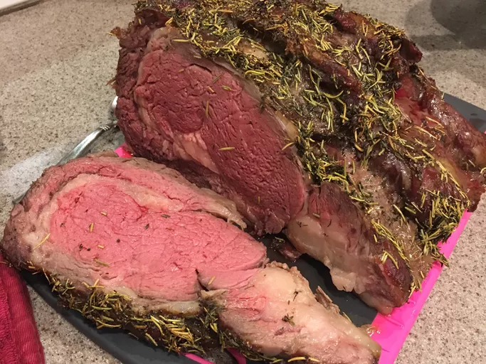

Reverse Seared Prime Rib

Description
I've perfected this reverse-sear prime rib, finally, after years of experimenting with different cooking methods for a standing rib roast. We feature this for a special Christmas dinner every year. Dry-brining the prime rib the day before roasting means every bite is flavorful, and slow-roasting at a low temperature followed by a high-heat sear ensures a delicious medium-rare doneness throughout with a savory herb crust.
Ingredients:
- 1 (10 pound) bone-in standing rib roast
- 2 tablespoons kosher salt
- ½ cup butter, softened
- 3 tablespoons chopped fresh rosemary
- 2 tablespoons chopped fresh thyme
- ground black pepper to taste
Steps:
- Season roast generously with kosher salt.
- Cover loosely with plastic wrap and refrigerate, 8 hours to overnight.
- Remove roast from the refrigerator and allow to come to room temperature.
- Preheat the oven to 200 degrees F (95 degrees C).
- Mix butter, rosemary, thyme, and black pepper together in a small bowl.
- Spread butter mixture over roast. Place roast in a large roasting pan.
- Bake roast in the preheated oven until internal temperature reaches 115 degrees F (46 degrees C) for medium-rare, about 3 1/2 hours. Remove from the oven and tent with aluminum foil; allow to rest, about 20 minutes.
- Meanwhile, increase the oven temperature to 500 degrees F (260 degrees C).
- Once the oven has come up to temperature, uncover rested roast and return it to the oven. Bake until well-browned, 6 to 10 minutes. Slice and serve.